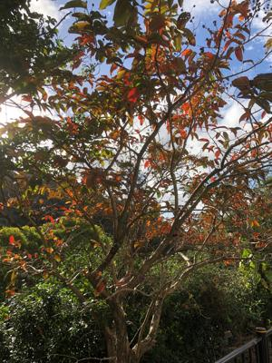

うるがいの話 ある日
最新: ＡＵでんき解約する【うるがいの話 ある日】とは 一日だけのプログです
『うるがいの話』の最新一日だけのプログで、通信料が少なく経済的だ。カニの画像をクリックすると全ての日付が載る『うるがいの話』サイトを表示します
|
|
【うるがいの話】 うるがい(ｳﾙｶﾞｲ urugai)とは、『もずくがに』の名前でとても大きくなります。 |
|---|---|
|
|
【カミマヤーの話】 猫のことを方言でマヤーといいます。カミマヤー（kamimayaa）とは、神の猫のことです。 |
|
【たながぁの音楽】 たながぁ（ﾀﾅｶﾞｰ tanagaa）とは手長えびのことで、何種類かあり大きいのは車 エビぐらいになります。 |

|
【ぶながぁの話】 ぶながぁ(ﾌﾞﾅｶﾞｰ bunagaa)とは、赤い髪の毛、赤い身体、そして身長は１ｍ２０ｃｍ ぐらい、川の蟹を食べているの目撃された。場所は沖縄県国頭郡大宜味村のと ある村僕の隣近所に住んでいる爺さんから、聞いた話です。 |
|
|
【ギーマの話】 ギーマ(giima)とは、山原の里山に咲くスズランに似た、 花を付けます。実は食べられます、 気が付くと口の周りが紫になっています。 |
2023年01月16日 (月）ＡＵでんき解約する
17:02

子供が、家にきた。何やらハガキを持っていたので、覗くと電気料金だった。
フーン、これって支払うのかと尋ねると『ＡＵでんきから、沖縄電量へ切替た
』のこと。ＡＵの人から、切り替えたほうがいいと言われ、先月切り替えたら
しい、かなり割安になったと。それを聞いて、子供に私の家のも、沖縄電力へ
替えてと頼むと、サッサと私のスマホを操作して済ました。もっと早く切り替
えれば良かったと思った次第である。ちなみに直近のＡＵでんきの料金は
12月 26,388円 スゴイことに
11月 16,565円 おお、ここからヤバイ
10月 10,606円
09月 11,552円
08月 16,166円
07月 16,166円
１６時５６分 ビットコインの総資産 ￥７、８４０（↑１６５）